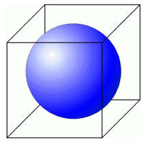
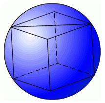

Megoldás (Pesti Vigadó)
Matematikai nyelvre lefordítva a problémát: Egy kockába gömböt írunk. A másik esetben egy gömbbe írunk kockát. Melyik esetben kisebb a különbség a két test térfogata között?
1. A gömböt írjuk a kockába. Láthatjuk, hogy ebben az esetben a gömb átmérője éppen a kocka élével egyenlő. Így kifejezhetjük a két test térfogatát:

A relatív veszteség pedig:
2. A kockát írjuk a gömbbe: Ha a testet a kocka lapátlója mentén kettévágjuk, akkor a síkmetszet a következő lesz: egy kör, amelybe egy téglalap van írva.
| A téglalap oldalai a és 2 nagyságúak, hiszen az egyik oldal a kocka oldala, a másik pedig a lapátlója.
|
A téglalap átlója viszont éppen a gömb átmérője. Így meg tudjuk állapítani a kapcsolatot a gömb sugara és a beírt kocka oldala között:

| A gömb térfogata: | | | | r3π, a kocka térfogata: | | | |
|
| A térfogatok különbsége: | | | | r3(π − | | | | )
|
| A relatív veszteség: | | | | = 1 − | | | |
|
Össze kell hasonlítanunk, hogy melyik a nagyobb:
Az első esetben a veszteség kiszámolva 47,6%, a második esetben pedig 63,2%. Így a második esetben nagyobb a veszteség.
« Vissza